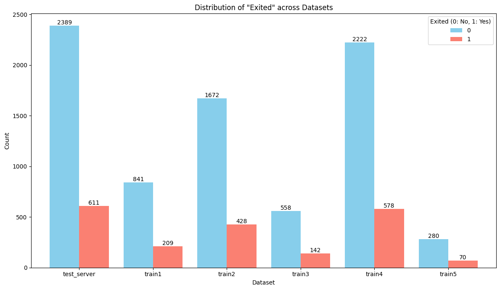
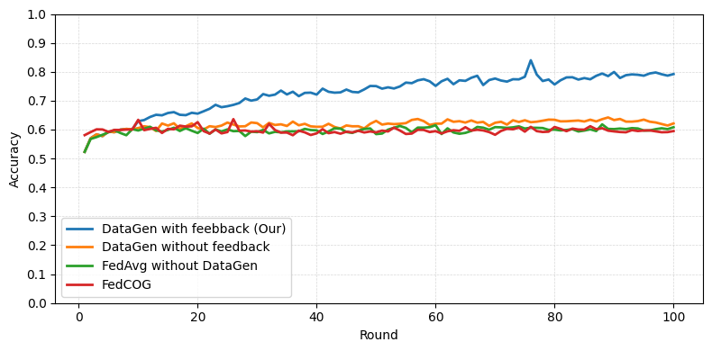

1 School of Information Technology, Tan Tao University, Tay Ninh, Vietnam
2 National Institute of Information and Communications Technology (NICT), Tokyo, Japan
3 Viettel Solutions, Ho Chi Minh City, Vietnam
Federated learning (FL) enables collaborative model training across distributed clients without requiring centralized access to local data. However, it faces significant challenges under domain shift, where discrepancies between client data distributions and deployment environments might degrade model performance.
We introduce a feedback-driven framework for domain adaptation in federated settings. The server performs domain analysis to detect distributional shifts during validation and generates lightweight feedback signals — Grad-CAM and SHAP — that highlight domain-specific patterns. These signals are transmitted to clients as adaptation cues, enabling more targeted local training.
The framework also supports client-side data generation with modality-appropriate generative models: variational autoencoders for tabular data, diffusion models for images, and language models for text. Combining server-guided feedback with client-side adaptation and augmentation yields consistent gains over standard FL baselines across diverse tasks and data modalities.
The server observes domain shift during validation to detect discrepancies between the training and target domains.
Grad-CAM / SHAP attributions become statistical summaries — never raw samples — reducing exposure of sensitive information.
Feedback conditions a TVAE, diffusion model, or LLM so each client synthesizes data aimed at the target domain.
Narrowing the source–target gap produces a more robust global model under non-IID conditions.
The server holds a test set representing the target domain. Clients train on local shards that may differ from it. Each feedback cycle turns the server's view of that gap into a compact, interpretable signal.
Require: {W_i}ᴺ local models; D_t test set; C clients; k, m positive integers 1: W_g ← aggregate(W_i) ▷ FedAvg or any strategy 2: if feedback generation is enabled then 3: for W_j ∈ {W_i} ∪ {W_g} do 4: prob_j ← prob(W_j(D_t)) ▷ predictions on the target set 5: end for 6: feedback ← ∅ ; F_mis ← ∅ 8: for d = (x, y) ∈ D_t do 9: W_d ← argmax { correct(W_j(x), y) ∧ biggest(prob_j(x)) } 10: h_d ← compute_heatmap(d, W_d) ▷ Grad-CAM or SHAP 11: feedback ← feedback ∪ {d : (top_k_important_feature(h_d), y)} 12: for c ∈ C do 13: if pred_c(x) ≠ y then 14: F_mis[c] ← F_mis[c] ∪ {d : prob_c(d)} 15: end if 16: end for 17: end for 18: for c ∈ C do 19: sort F_mis[c] by prediction probability, descending 20: keep the top_m entries → F_mis,top_m[c] 21: send feedback[ F_mis,top_m[c].keys() ] to client c 22: end for 23: end if 24: send W_g to all clients
Require: G generative model; F feedback; D_local client data; N samples to generate 1: D_g ← ∅ 2: D_aug ← D_local 3: while len(D_g) < N do 4: for (x̄, p, y) ∈ F do ▷ x̄: top-k features, p: positions, y: label 5: initialize a noisy input x̂ 6: overwrite features x̄ into x̂ at position p 7: add G(x̂, y) to D_g 8: end for 9: end while 10: D_aug ← D_aug ∪ D_g 11: train the local model on D_aug ▷ real + synthetic
Flower is the FL framework, FedAvg the aggregation rule, in every experiment.
10,000 customers, 18 features, ~80% non-churn. The 70% training split is divided into 5 non-IID client shards; the server holds the 30% test split as the target domain. SHAP drives the feedback; a TVAE pre-trained on the full dataset generates the synthetic rows. 30 rounds.
| Method | Accuracy | Precision | Recall | F1-Score |
|---|---|---|---|---|
| DataGen with Feedback | 0.9280 | 0.7770 | 0.9067 | 0.8369 |
| FedAvg without DataGen | 0.8320 | 0.6072 | 0.4959 | 0.5459 |
| DataGen without Feedback | 0.8243 | 0.5802 | 0.4975 | 0.5357 |
| Centralized Training | 0.8433 | 0.4484 | 0.6732 | 0.5383 |

ResNet-18 classifier, diffusion model pre-trained on all 60,000 images, data split into 10 non-IID subsets with one held out as the target set. Grad-CAM supplies the feedback. After 50 communication rounds, our method leads on all three target sets — above FedCOG, data generation without feedback, and FedAvg.
DistilBERT fine-tuned over 200k+ headlines across 42 categories, split into 6 non-IID subsets (Dirichlet, β = 0.05; five clients plus the server test set). Grad-CAM token feedback drives Gemma-based headline generation.

Training starts as ordinary FL and switches on feedback when accuracy drops between consecutive rounds. The server then picks a small subset of clients — typically the three with the lowest accuracy — and flags a few high-error classes for each.
Two runnable implementations live in this repository, each with its own data shards, requirements, and README.
tabular/ (SHAP + TVAE) and text/ (Grad-CAM + Gemma) tracks are included here. The CIFAR-10 / diffusion experiment from Section 3.2 of the paper is not part of this repository.# Python 3.8–3.11 (torch 2.2.2 has no 3.12 wheel) cd tabular conda create -n flgenai-tabular python=3.10 -y && conda activate flgenai-tabular pip install -r requirements.txt # terminal 1 — server, listens on 0.0.0.0:9000 python server_tabular.py # terminal 2..n — one process per client shard python client_tabular.py --client-id client1 --train-csv dataset/7030/train1.csv \ --server-address 127.0.0.1:9000 --log-dir logs/exp01
plateau_window, plateau_delta) after min_feedback_round; features below shap_threshold are masked to NaN before being sent.cosine_sim_threshold.reference payload, used to fill in the masked values. No client data is shared — but this goes further than the paper's summaries-only description, so review it before deploying on sensitive target data.--log-dir: per-round metrics, timings, feedback JSON, and client logs.cd text pip install -r requirements.txt # server — Grad-CAM feedback on plateau / overfitting python server_textdata.py --num_rounds 30 --ckpt_every 5 # client — DistilBERT training + Gemma-2B generation python client_textdata.py
TEST_CSV in the server, CSV_PATH and DRIVE_ROOT in the client — and supply your own Hugging Face token, which Gemma requires.beginning, middle or end, by relative index.USE_GRADCAM_FEEDBACK = False reproduces the generation-without-feedback baseline.| Shard | Tabular (rows) | Text (rows) |
|---|---|---|
| Server test set | 3,000 | 10,979 |
| Client 1 | 1,050 | 48,740 |
| Client 2 | 2,100 | 69,641 |
| Client 3 | 700 | 31,426 |
| Client 4 | 2,800 | 28,196 |
| Client 5 | 350 | 20,517 |
Exited); text shards carry 42 news categories each with a different dominant set.@inproceedings{vu2026domain,
author = {Vu, Phuong-Anh and Phan, Kim-Tinh and Nguyen, Cao-Dien and
Cao, Tien-Dung and Phong, Le Trieu and Nguyen, Ngoc-Thai},
title = {Domain Adaptation of Federated Learning by Data Generation
and Server Feedback},
booktitle = {Multi-disciplinary International Conference on Artificial
Intelligence (MIWAI 2025)},
series = {Lecture Notes in Artificial Intelligence},
volume = {16354},
pages = {272--283},
publisher = {Springer Nature Singapore},
year = {2026},
doi = {10.1007/978-981-95-4960-3_22}
}
This research is supported by the Tan Tao University (TTU) Foundation for Science and Technology Development under Grant No. TTU.RS.25.102.003. The work of L. T. Phong is supported in part by the JST CREST Grant JPMJCR21M1, Japan.